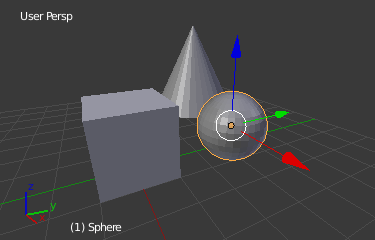

Contextual Views¶
The 3D View has several "contextual view" modes that can be set for a particular 3D View. These views can change how the overall 3D View looks or how you interact with objects.
Огляд Глобально/Локально -- View Global/Local¶
Орієнтир
| Mode: | All modes |
|---|---|
| Menu: | |
| Hotkey: | NumpadSlash |
Глобальний -- Global -- огляд показує усі 3D об'єкти у сцені. Локальний -- Local -- огляд ізолює виділені об'єкт або об'єкти, щоб тільки він або вони були видимі в оглядвікні. Це корисно для роботи з об'єктами, що перекриваються для даної точки зору іншими об'єктами, а також для прискорення продуктивності оглядвікна у важких, складних сценах.
Ви можете перемикатися між Глобальним -- Global та Локальним -- Local оглядами, скориставшись вище зазначеною командою у меню «Огляд» -- View або за допомогою скорочення NumpadSlash.

Глобальний огляд -- Global View. |

Локальний огляд -- Local View. |
{kind=link}
Ghi chú
These notes cover changes in local view which are not immediately obvious.
- 3D Курсор
- In local view the 3D cursor is not locked to the scene. Instead, each view has an independent cursor location.
- Шари
Local view bypasses layers, using only the selected objects when entering local view. Although new objects may be added while in local view.
It's also possible to send objects out of local view, using , which can be useful to further isolate a selection.
- Передогляди зображів
- Preview renders will still use lamps outside the local view, this allows you to quickly render previews without having to remember to select all lamps when entering local view.
Mẹo
Випадкове натискання NumpadSlash може траплятися досить часто, якщо ви новачок у Blender'і, тому, якщо купа об'єктів у вашій сцені десь таємничо зникла, то спробуйте вимкнути локальний огляд.
Чотирибічний Огляд -- Quad View¶
Орієнтир
| Mode: | All modes |
|---|---|
| Menu: | |
| Panel: | |
| Hotkey: | Ctrl-Alt-Q |
Перемикання на Чотирибічний Огляд -- Quad View розділить 3D Огляд на чотири огляди: Три Ортогональних -- Orthographic «огляди збоку» та один «Камера» -- Camera / «Вільний Огляд» -- User View. Це огляд дозволяє вам відразу бачити вашу модель з кількох точок зору. У цьому розташуванні ви можете зумувати та панорамувати кожен огляд незалежно, але не можете обертати ортогональні огляди.
Скорочення для всіх цих оглядів:
- Все в Огляд -- View All Ctrl-Home
- Виділене в Огляд -- View Selected Ctrl-NumpadPeriod
Ghi chú
Чотирибічний Огляд відрізняється від розділення областей -- splitting the area і вирівнювання оглядів вручну. У Чотирибічному Огляді ці чотири огляди залишаються частиною єдиного 3D Огляду. А тому вони мають спільні опції рисування та шари.
Чотирибічний Огляд -- Quad View.
Опції¶
Ці опції можна знайти у «регіон Властивості > Показ» -- .
- Блокування -- Lock
- If you want to be able to rotate each view, you can uncheck the Locked option.
- Коробка -- Box
- Syncs the view position between side views.
- Відсік -- Clip
- Відсікає вигляд об'єктів на основі того, що видимо в інших оглядах збоку.